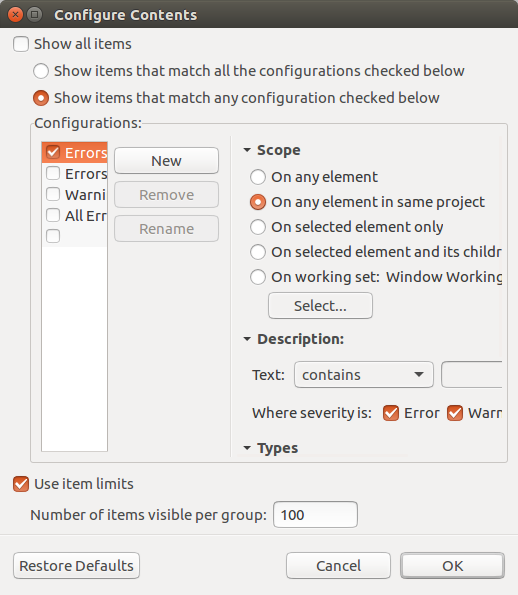
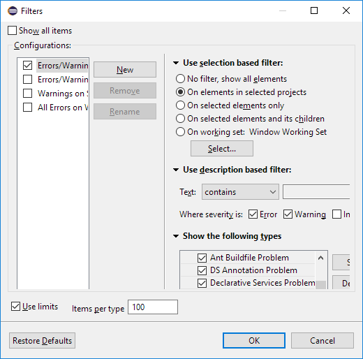
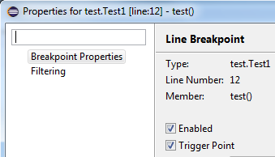
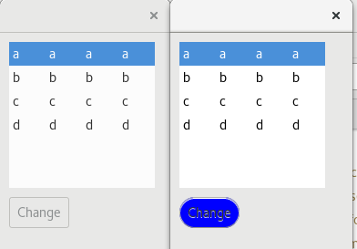

Here are some of the more noteworthy things available in the Oxygen milestone build M2
which is now available for download.
We also recommend to read the Tips and Tricks, either via Help > Tips and Tricks... or online for
Platform,
JDT, and
PDE.
| Platform |
| Switch Workspace and Restart menu items |
The Switch Workspace and Restart menu items are now at the bottom of the File menu:
just above the Exit item, on Windows and Linux, and as last menu items on the Mac.

|
| Command images shown in Quick Access |
Quick Access (Ctrl+3) now shows the icon for a Command if available.
Otherwise, it still shows the default blue ball.

|
| GTK tree collapse/expand key bindings |
On GTK+ 3.6 and later, the Left and Right arrow keys now collapse and expand
the current tree item (in addition to the GTK+ default -/+ key bindings).
|
| Reduced TabItems padding under GTK+ |
On GTK+ 3.20 and later, the padding around around TabItems has been reduced.

|
| Simplified filters dialog for Problems, Bookmarks and Tasks views |
The Filters dialog of the Problems, Bookmarks and Tasks views has been simplified.
If you select several configurations, items matching any of these configurations will be shown.
Old dialog in Problems view:

New dialog in Problems view:

|
| Improved visibility of the filter dialog for Problems, Bookmark and Tasks view |
The Filters dialog is now accessable from the toolbar for Problems, Bookmark and Tasks view. Filters was previously hidden away in the Views dropdown menu; moving the functionality over to the toolbar gives the functionality improved visibility and user experience.
Previous location:

New location:

|
| Quick Access Search Text in Help |
You can now Search in Help after you enter text in the Quick Access dialog.
The option is activated when the filter text is longer than three characters,
and is always enabled as last entry in the result table.
Search in Help using the new Quick Access dialog:

Search in Help using the standalone dialog:

|
| Improved editor selection dialog |
The Editor Selection dialog now offers a one-click-option for choosing the editor to open all the files with a given extension.
Example when selecting "file.xyz" and choosing Open with -> Other....

|
| Configurable left and right sides in Compare editor |
The Compare editor now offers an option to swap left and right sides of the display.

The direction of comparison is preserved between invocations of the Compare editor
and can also be changed in the Compare/Patch preference page.

|
| Reduced the performance impact of very frequent progress reporting during background process execution |
When background tasks were frequently updating their progress (by calling IProgressMonitor.setTaskName(String)
very often), the execution was heavily slowed down due to this reporting. Performance tests have shown 2-3 times faster execution times.
|
| Stable sorting in viewers based on ViewerComparator |
The ViewerComparator ignores now additional decorators during its sorting.
This results in stable sorting.
For example, if the Git team provider is used, it adds the ">" for changed files. This additional ">" info is now ignored.
You can disable this by setting the system property eclipse.disable.fix.for.bug364735 to true.
This temporary system property is planned to be removed, if no issues with the new sorting are discovered.
|
| More high resolution images |
More images in the old GIF format were replaced by images in the PNG format. In addition high resolution images where added.
As PNG can handle transparency much better than GIF, the ugly white borders around shapes visible in the dark theme are now gone for these icons.
So see their complete beauty a high-DPI monitors (e.g Retina-Diplay Mac) is needed.
The lower part of the screenshot shows the wizard banner image of the Import Dialog in high resolution.

The right part of the screenshot shows all the icons in high resolution.

|
| JDT |
| Method result after step operations |
During debugging, the last method result (per return or throw) that was observed during Step Into, Step Over or Step Return, is shown as first line in the Variables view.

This can be disabled with the new option
Preferences > Java > Debug > Show method result after a step operation (if supported by the VM; may be slow)
|
| Triggers for breakpoints |
Users can now define a set of triggers for the breakpoints in a workspace.

Any breakpoint can be set as a trigger point by using "Breakpoint Properties..." dialog or Breakpoints view detail pane.

Triggers will be displayed by an overlay of "T" and the breakpoints suppressed by the triggers will be displayed by an overlay of "T" with a cut.
All the other breakpoints(suppressed by triggers) will be hit only after any of the trigger point is hit.
All the triggers are disabled after a trigger point is hit and will be re enabled after the run.
|
| PDE |
| Changes in Version Management Preference Tab |
Version Management tab of the Plug-in Development > API Errors/Warnings preference page has been
reorganized. The sub-options to control major/minor version change without API breakage/changes have been converted into normal options
and they are set to warning by default. The option 'Report changed execution environment incompatibility' has been moved
to the bottom of the tab.

|
| Context menu in Error Log view has 'Show In Console' |
In the Error Log view, the context menu now has an item 'Show In Console' which shows the selected error in
the Console view.

|
| API tools reports default method addition as a breaking change |
The API tools will report addition of a default method in an API interface (that can be implementable by
clients) as a
breaking change.
|
| Platform Developers |
| Ability to tweak the GTK+ theme used |
Ability to tweak GTK+ theme by providing your own css file to extend it has been added. Users can point to their own css file via -Dorg.eclipse.swt.internal.gtk.cssFile=/path/to/my.css property.
The following CSS snippet gives the effect below.
button:hover {
box-shadow: inset 0 0 0 5px #3071A9;
}

Note: Systems with GTK+ 3.20 or newer only.
|
| Ability to apply GTK CSS at runtime |
GTK+ css can be applied at runtime via Widget.setData(String, Object) and org.eclipse.swt.internal.gtk.css key.
Sample:
Button.setData("org.eclipse.swt.internal.gtk.css", "button:hover {background: blue; border-radius: 20px;}")
will produce the following on hover:

Note: Systems with GTK+ 3.20 or newer only.
|
| Helper methods to create lambda style selection listeners |
The SelectionListener interface in SWT was enhanced to provide the
SelectionListener.widgetSelected and the
SelectionListener.widgetDefaultSelected static helper methods to create lambda style listeners.
Example for adding a selection listener to a button:
import static org.eclipse.swt.events.SelectionListener.widgetSelected;
// ....
Button button = new Button(parent, SWT.PUSH);
button.addSelectionListener(widgetSelected( e-> {System.out.print("Hello");}));
button.addSelectionListener(widgetSelected( e-> {System.out.print("Hello");}));
|
| Screenshot from JUnit |
In bundle org.eclipse.test.performance, there's a new API to take a screenshot from a JUnit test:
org.eclipse.test.Screenshots#takeScreenshot(Class<?> testClass, String name)
In the Eclipse Platform/SDK builds that are run on Hudson, the PNG files will be saved in a directory that is accessible via
Console Output Logs
on the Test Results pages.
|
| Equinox |
| SubMonitor#step(int) |
org.eclipse.core.runtime.SubMonitor has a new method step(int work) that reports progress and checks cancellation at the
same time. Checking cancellation in this way takes less code and is more efficient than checking
cancellation using IProgressMonitor#isCanceled(). The new method can be used as a drop-in
replacement for IProgressMonitor#worked(int) in code that already handles OperationCanceledException.
Example usage:
SubMonitor subMonitor = SubMonitor.convert(monitor, someCollection.size());
for (Object next : someCollection) {
subMonitor.step(1);
// ...do some work...
}
|
|
The above features are just the ones that are new since the previous milestone
build. Summaries for earlier Oxygen milestone builds: